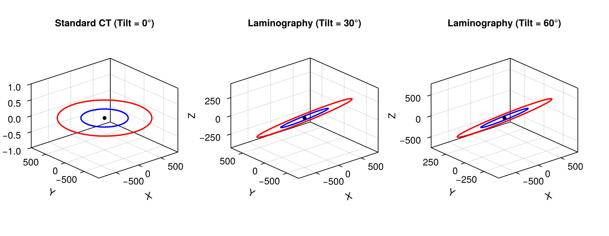
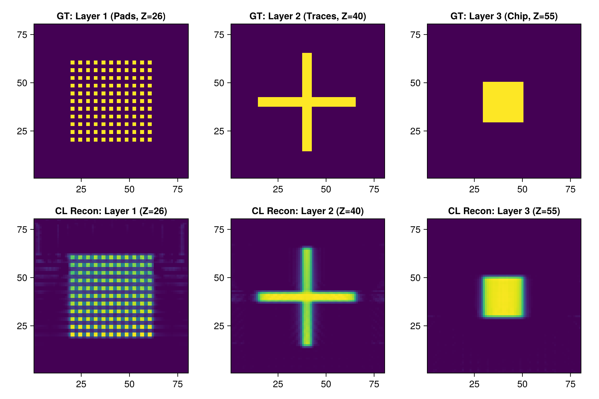

Tutorial 6: Computed Laminography with Tilted Rotation Axis
Non-Destructive Inspection of Planar Printed Circuit Boards (PCBs) and 3D Trajectory Modeling.
Prerequisites
This tutorial uses Makie (recommended backend: CairoMakie) for visualization. If CairoMakie is not installed in your environment, add it by running using Pkg; Pkg.add("CairoMakie").
1. Introduction
In flat, extended objects such as Printed Circuit Boards (PCBs) and semiconductor packages, standard 360° rotational CT is impractical because X-rays must traverse prohibitive material thicknesses along edge-on directions. Computed Laminography (CL) solves this by tilting the rotation axis (e.g. by 30° to 60°), keeping X-ray paths short and uniform across all projection angles.
Because the rotation axis is inclined, analytical FBP/FDK fails. However, ASTRA's 3D Vector Geometry (ConeVec3DGeometry) and 3D Iterative Reconstruction (SIRT3D) model and reconstruct laminography data naturally.
Topics covered in this notebook:
- Formulating 3D laminography trajectory vectors.
- Visualizing 3D cone-beam trajectories at various tilt angles (0°, 30°, 60°).
- Generating a multi-layer planar PCB phantom.
- 3D iterative reconstruction using
SIRT3DMethodwith CUDA. - Evaluating layer slice separation and missing-cone artifacts.
2. Package Loading and Environment Setup
using AstraToolbox
using CairoMakie
using LinearAlgebra
println("Has CUDA available: ", has_cuda())3. Function to Construct Laminography Geometry Vectors
We construct a 12-element vector geometry where the rotation axis is tilted by angle $\theta$ relative to the Z-axis.
function build_laminography_geometry(num_angles, tilt_deg, sod, odd; det_u = 100, det_v = 100)
angles = Float32.(range(0, 2pi, length = num_angles))
theta = Float32(deg2rad(tilt_deg))
vectors = zeros(Float32, 12, num_angles)
for (i, phi) in enumerate(angles)
# Source coordinates: tilted circular orbit
# Orbit normal n = (sin(theta), 0, cos(theta))
sx = -sod * sin(phi)
sy = sod * cos(phi) * cos(theta)
sz = -sod * cos(phi) * sin(theta)
# Detector center coordinates
dx = odd * sin(phi)
dy = -odd * cos(phi) * cos(theta)
dz = odd * cos(phi) * sin(theta)
# Detector orientation vectors (u, v)
ux = cos(phi)
uy = sin(phi) * cos(theta)
uz = -sin(phi) * sin(theta)
vx = 0.0f0
vy = sin(theta)
vz = cos(theta)
vectors[:, i] = [sx, sy, sz, dx, dy, dz, ux, uy, uz, vx, vy, vz]
end
return ConeVec3DGeometry(vectors, det_u, det_v)
end
println("Laminography geometry builder defined.")4. Visualizing 3D Scanning Trajectories (0° vs 30° vs 60°)
Visualize how tilting the axis rotates the source and detector planes in 3D space.
geom_0 = build_laminography_geometry(72, 0, 800.0f0, 400.0f0)
geom_30 = build_laminography_geometry(72, 30, 800.0f0, 400.0f0)
geom_60 = build_laminography_geometry(72, 60, 800.0f0, 400.0f0)
fig = Figure(size = (900, 350))
for (idx, (geom, title_str)) in enumerate([(geom_0, "Standard CT (Tilt = 0°)"),
(geom_30, "Laminography (Tilt = 30°)"),
(geom_60, "Laminography (Tilt = 60°)")])
ax = Axis3(fig[1, idx], title = title_str, xlabel = "X", ylabel = "Y", zlabel = "Z")
src = geom.vectors[1:3, :]
det = geom.vectors[4:6, :]
lines!(ax, src[1, :], src[2, :], src[3, :], color = :red, linewidth = 2, label = "Source")
lines!(ax, det[1, :], det[2, :], det[3, :], color = :blue, linewidth = 2, label = "Detector")
scatter!(ax, [0.0], [0.0], [0.0], color = :black, markersize = 8)
end
fig
5. Creating a Multi-layer PCB Phantom and Forward Projection
Create a flat 3D phantom with distinct geometric patterns across 3 separate Z-layers.
nx, ny, nz = 80, 80, 80
pcb_phantom = zeros(Float32, nx, ny, nz)
# Layer 1 (Bottom, z = 25): Circular pads
for ix in 20:4:60, iy in 20:4:60
if (ix-40)^2 + (iy-40)^2 < 30^2
pcb_phantom[ix:ix+1, iy:iy+1, 25:27] .= 1.0f0
end
end
# Layer 2 (Middle, z = 40): Cross traces
pcb_phantom[15:65, 38:42, 39:41] .= 1.5f0
pcb_phantom[38:42, 15:65, 39:41] .= 1.5f0
# Layer 3 (Top, z = 55): Square IC chip
pcb_phantom[30:50, 30:50, 54:56] .= 2.0f0
println("Multi-layer PCB phantom generated. Nonzero elements: ", count(>(0), pcb_phantom))
# Forward projection with 45° tilted laminography geometry
geom_cl = build_laminography_geometry(60, 45, 600.0f0, 300.0f0; det_u = 96, det_v = 96)
sino_cl = project(pcb_phantom, geom_cl; backend = has_cuda() ? cuda() : cpu())
println("Laminography projection finished! Sinogram size: ", size(sino_cl))6. 3D Iterative Reconstruction with SIRT (SIRT3D)
We reconstruct the tilted laminography data using 3D SIRT with non-negativity constraints.
if has_cuda()
# SIRT3D reconstruction (35 iterations)
rec_cl = reconstruct(
sino_cl,
geom_cl,
SIRT3DMethod(iterations = 35, min_constraint = 0.0f0);
volume_size = (nx, ny, nz),
backend = cuda()
)
println("3D Laminography SIRT reconstruction finished!")
else
println("CUDA is not available. Skipping 3D reconstruction.")
end7. Evaluating Layer Separation and Missing-Cone Artifacts
Inspect each reconstructed layer slice (Z = 26, Z = 40, Z = 55) to verify layer separation.
if has_cuda()
fig = Figure(size = (900, 600))
# Ground Truth layers
ax1 = Axis(fig[1, 1], title = "GT: Layer 1 (Pads, Z=26)", aspect = DataAspect())
heatmap!(ax1, pcb_phantom[:, :, 26], colormap = :viridis)
ax2 = Axis(fig[1, 2], title = "GT: Layer 2 (Traces, Z=40)", aspect = DataAspect())
heatmap!(ax2, pcb_phantom[:, :, 40], colormap = :viridis)
ax3 = Axis(fig[1, 3], title = "GT: Layer 3 (Chip, Z=55)", aspect = DataAspect())
heatmap!(ax3, pcb_phantom[:, :, 55], colormap = :viridis)
# Reconstructed layers
ax4 = Axis(fig[2, 1], title = "CL Recon: Layer 1 (Z=26)", aspect = DataAspect())
heatmap!(ax4, rec_cl[:, :, 26], colormap = :viridis)
ax5 = Axis(fig[2, 2], title = "CL Recon: Layer 2 (Z=40)", aspect = DataAspect())
heatmap!(ax5, rec_cl[:, :, 40], colormap = :viridis)
ax6 = Axis(fig[2, 3], title = "CL Recon: Layer 3 (Z=55)", aspect = DataAspect())
heatmap!(ax6, rec_cl[:, :, 55], colormap = :viridis)
fig
end